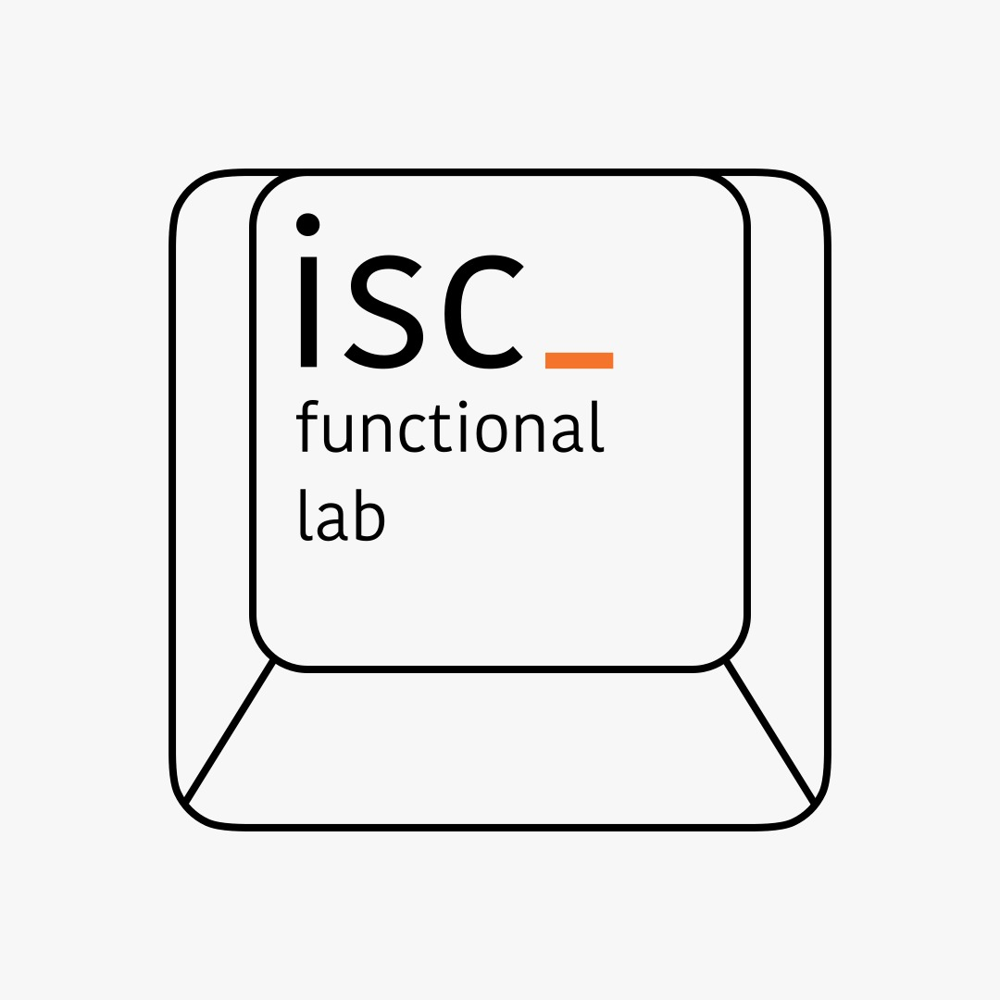
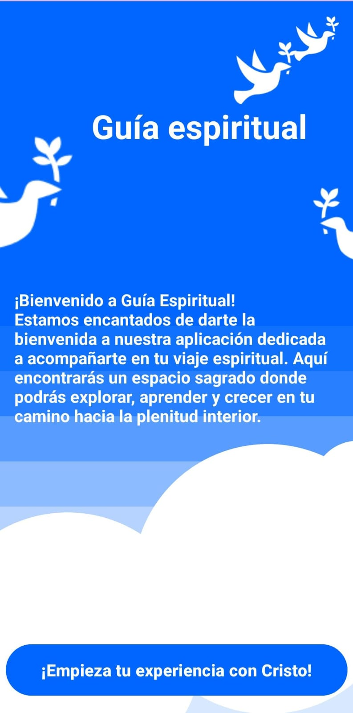
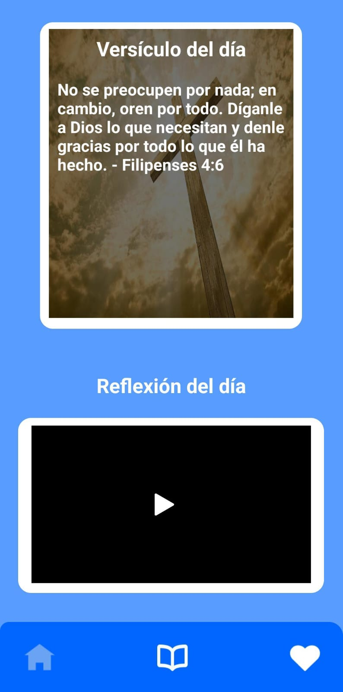
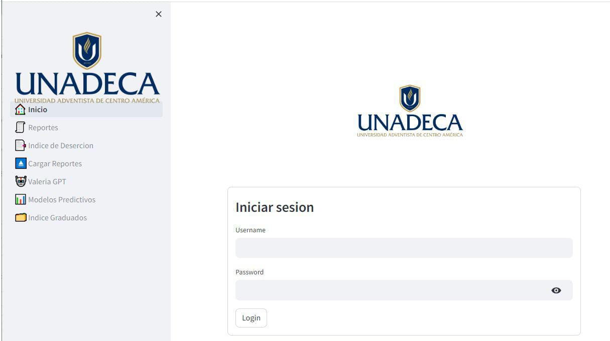

Acerca de mi
Me llamo Jexon, soy un joven costarricense de 19 años apasionado por la ingeniería y la tecnología. Actualmente, cursando el bachillerato en Ingeniería en Sistemas en la prestigiosa Universidad Adventista de Centroamérica.
Entre mis cualidades más destacadas se encuentran mi capacidad para resolver problemas de manera creativa y eficiente, mi habilidad para trabajar en equipo, siendo amable y positivo en la interacción con mis compañeros, mi compromiso con la honestidad y la integridad en todas mis acciones, mi enfoque analítico para abordar desafíos complejos y mi actitud positiva ante los retos que se presentan.
Actualmente me encuentro en un grupo de compañeros llamado "isc_funcional_lab", que es un grupo donde se promueve el desarrollo y las cualidades de los estudiantes para que estén preparados para situaciones del mundo real.
Proyectos desarrollados
Guía espiritual
 Durante mi cuarto cuatrimestre de mi carrera, pude realizar una app de meditaciones llamada "Guía espiritual" , la cual contenía múltiples versículos cada semana y ofrecía reflexiones para el crecimiento personal con valiosas lecciones. Además, tenía un diseño simple y accesible para todos.
Student Path
Durante mi tercer cuatrimestre, junto con un grupo de compañeros, hicimos una página web con la librería Streamlit, Python, Azure y PostgresSQL que podía realizar cálculos de análisis complejos, como la cantidad de estudiantes de diferentes nacionalidades, verificación de estudiantes graduados, y estudiantes que abandonaron la carrera, entre otros.
Mis logros
- Participé en el desarrollo de un sistema complejo para la universidad, con tener solo un año de experiencia en programación.
- Logré adquirir y aplicar habilidades en el manejo eficiente de bases de datos, permitiendo una gestión óptima de los datos en el sistema.
Mis intereses
-Disfruto enfrentarme a desafíos de lógica y resolver problemas.
-Soy un fanatico de los videojuegos.
-Me encanta la música.
-Quiero convertirme en un profesional destacado en mi área de estudio.